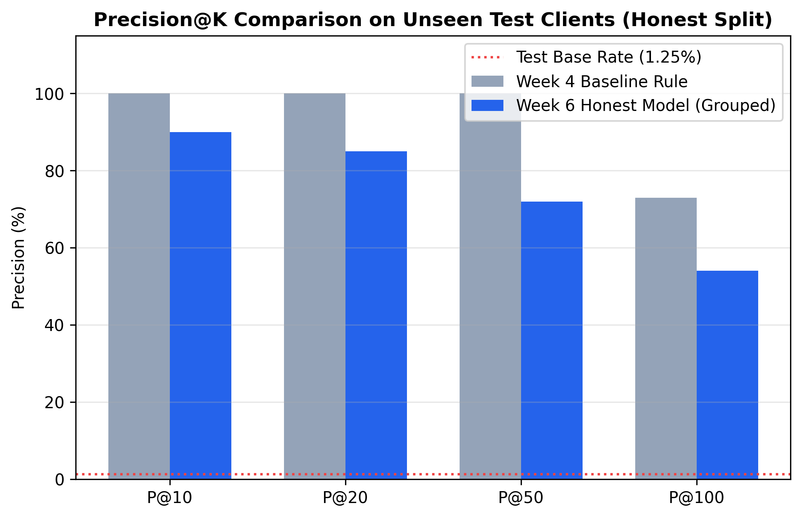
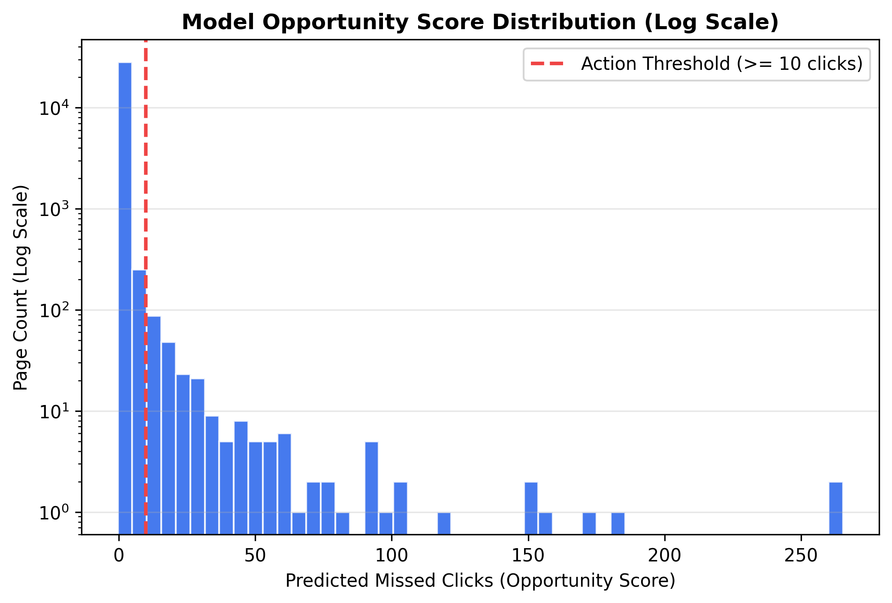
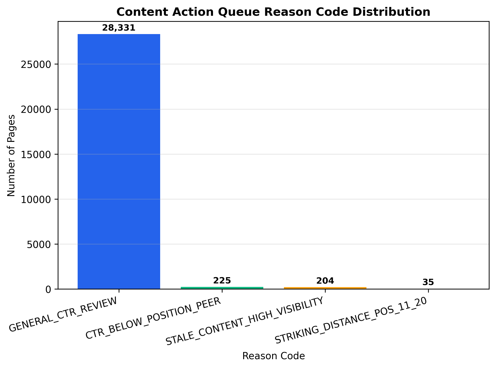

01. Introduction & Problem Statement
Organic search engine traffic is governed by dynamic result page rankings where an asset's position tier dictates expected Click-Through Rate (CTR). High-ranking pages capture the majority of search clicks, whereas lower ranks yield exponentially smaller traffic shares. However, a major challenge in search content management—and the core problem addressed by FlyRank—is that organic content items frequently receive substantial search impressions while underperforming in CTR relative to comparable position-tier peers. Standard search audits rely on crude site-wide average position drops or static impression thresholds, failing to isolate pages with true snippet or relevance deficits.
Position-aware opportunity scoring solves this challenge by benchmarking each page's CTR against its position-tier peer median (e.g. Position 1: 28.5%, Top 3: 14.0%, Page 1: 3.5%). By isolating the gap between observed CTR and position peer expectations, search engineering teams can quantify volume-weighted missed clicks:
We explicitly frame this machine learning task as an editorial decision-support system. A wrong call incurs concrete business costs: assigning human editors (10–15 minutes per page) to rewrite titles on pages facing structural SERP Instant Answer features wastes editorial capacity, while uncautious title edits on high-performing anchor pages risk ranking regressions.
02. Dataset & Public Safety Pass
This research utilizes the official FlyRank ML Internship dataset release. The primary experimental slice comprises data/raw/content_refresh_anonymized.csv, containing 30,000 pseudonymized content rows across 31 client accounts. Each row represents a single content asset aggregated over a trailing 90-day search and web analytics performance window.
Exclusions & Data Hygiene:
We excluded 1,205 rows exhibiting avg_position == 0 (representing content items with zero Google Search Console rank observations). Furthermore, label-derived trend attributes (is_declining_label, trend_direction, trend_pct) and pseudonymized identifiers (content_id, client_id) were strictly removed from model input features to prevent target leakage and client memorization.
03. Methodology & Validation Design
Our methodology defines the recovery target proxy as volume-weighted missed clicks:
missed_clicks = max(0, impressions_90d * (expected_ctr_peer - ctr))
where expected_ctr_peer is the median CTR of position-tier peers. Pages exhibiting \(\text{missed\_clicks} \ge 10.0\) are designated as actionable targets (representing a dataset base rate of 1.52% across all 28,795 valid pages, and 1.25% in the unseen test client split).
Feature Engineering Matrix (47 Non-Leakage Signals)
We constructed 47 clean features across four categories:
- Search Visibility Scale:
impressions_90d,impressions_last_30d,impressions_prev_30d,search_volume,cpc. - Position Dynamics:
avg_position, one-hot encodedposition_tierandimpression_tier. - Content Metadata:
word_count,char_count,content_age_days,days_since_last_update,content_type,main_intent. - GA4 Engagement Signals:
engagement_rate,scroll_rate,sessions_90d,pageviews_90d,users_90d,days_with_sessions. - Missingness Indicator Flags:
has_search_volume,has_word_count,has_scroll_rate.
Validation Split Design (Honest Grouped Split)
In cross-sectional multi-client datasets, standard random train/test splits cause severe data leakage: pages from the same client appear in both splits, allowing models to memorize domain-specific latent structures. To evaluate true out-of-sample generalization, we implemented a Client-Grouped Split (GroupShuffleSplit on client_id: 25 train clients / 6 test clients, test \(N=5,821\)).
04. Experimental Results (Model vs. Baseline)
We compare the Week 4 Baseline Heuristic Rule against the Week 6 HistGradientBoostingRegressor model evaluated on identical unseen test client domains (\(N=5,821\), Base Rate = 0.0125 / 1.25%).
| Method / Model | Base Rate | P@10 | P@20 | P@50 | P@100 | Top-10 Recoverable Clicks | Top-50 Recoverable Clicks |
|---|---|---|---|---|---|---|---|
| Week 4 Baseline Rule | 0.0125 | 1.0000 (100%) | 1.0000 (100%) | 1.0000 (100%) | 0.7300 (73%) | 1,206.8 | 2,283.7 |
| HistGradientBoosting (Grouped Split) | 0.0125 | 0.9000 (90%) | 0.8500 (85%) | 0.7200 (72%) | 0.5400 (54%) | 709.2 | 1,627.3 |



Interpretation of Results & Comparative Analysis:
Under the unseen-client test split (\(N=5,821\), Base Rate = \(1.25\%\)), the fixed heuristic baseline outperformed the HistGradientBoostingRegressor model across all reported ranking precision and recoverable click metrics:
- Ranking Precision: The heuristic baseline achieved perfect Precision@10, @20, and @50 (\(1.0000\) / \(100\%\)) compared to the ML model's \(0.9000\), \(0.8500\), and \(0.7200\) respectively. At Precision@100, the heuristic maintained \(0.7300\) vs. the ML model's \(0.5400\).
- Recoverable Clicks Prioritized: In the top-10 recommended pages, the heuristic baseline identified \(1,206.8\) recoverable clicks compared to \(709.2\) for the ML model. In the top-50 queue, the heuristic captured \(2,283.7\) recoverable clicks vs. \(1,627.3\) for the ML model.
The empirical findings provide clear guidance regarding model performance and baseline selection:
- Useful Signal: The ML model demonstrated strong ranking utility, achieving \(90.0\%\) Precision@10 (\(72\times\) lift over the \(1.25\%\) base rate).
- No ML Superiority: However, on this unseen-client split, the ML model did not outperform the simpler fixed heuristic baseline. Therefore, the evidence does not justify claiming ML superiority.
- Baseline Integrity: The position-peer heuristic rule remains the primary operational benchmark and superior recommendation queue generator under this evaluation.
- Future Work: Further feature engineering, pairwise/listwise ranking loss objectives, and time-series split validation are required before an ML model can claim an operational advantage over heuristic rules.
05. Limitations & Honest Framing
In accordance with rigorous research standards, we explicitly detail what this work cannot claim:
- Observational Limitation: The model identifies historical CTR deficits; it does not prove causal click recovery or guarantee Google SERP ranking shifts.
- Zero-Click Features: Informational intent queries facing Google Instant Answer boxes or Knowledge Panels exhibit structural CTR deficits that title edits cannot resolve.
- Survivor Bias: The cross-sectional snapshot contains surviving published pages; deleted underperformers are omitted.
Mandatory Human Review Protocol: All automated recommendations must undergo five human editorial checks (Intent Alignment, SERP Feature Inspection, Content Quality, Brand Safety, and Historical CTR Stability) prior to publishing.
06. Ranked Recommendations & Action Playbook
The model outputs a fully prioritized content refresh queue (\(N=28,795\) valid pages) mapped to concrete reason codes and editorial actions:
| Reason Code | Recommended Action | Page Count | Editorial Priority |
|---|---|---|---|
CTR_BELOW_POSITION_PEER |
OPTIMIZE_TITLE_META_SNIPPET |
225 | High (Immediate Audit) |
STALE_CONTENT_HIGH_VISIBILITY |
UPDATE_FRESHNESS_AND_DATES |
204 | Medium-High |
STRIKING_DISTANCE_POS_11_20 |
REFRESH_CONTENT_DEPTH_INTENT |
35 | Medium |
GENERAL_CTR_REVIEW |
AUDIT_USER_INTENT_ALIGNMENT |
28,331 | Standard Maintenance |
Strict Guardrails (No-Go Automation Rules): Automatic publishing, automated content deletions, and title tag rewrites on Instant Answer pages are strictly prohibited. Retraining is triggered if input drift exceeds 15% or test P@10 falls below 80.0%.
07. Reproducibility & Artifact Links
All experiments, data contracts, baseline scores, model training scripts, and validation audits are 100% reproducible with fixed seed RANDOM_SEED = 42. Access full source code and executed notebooks below: